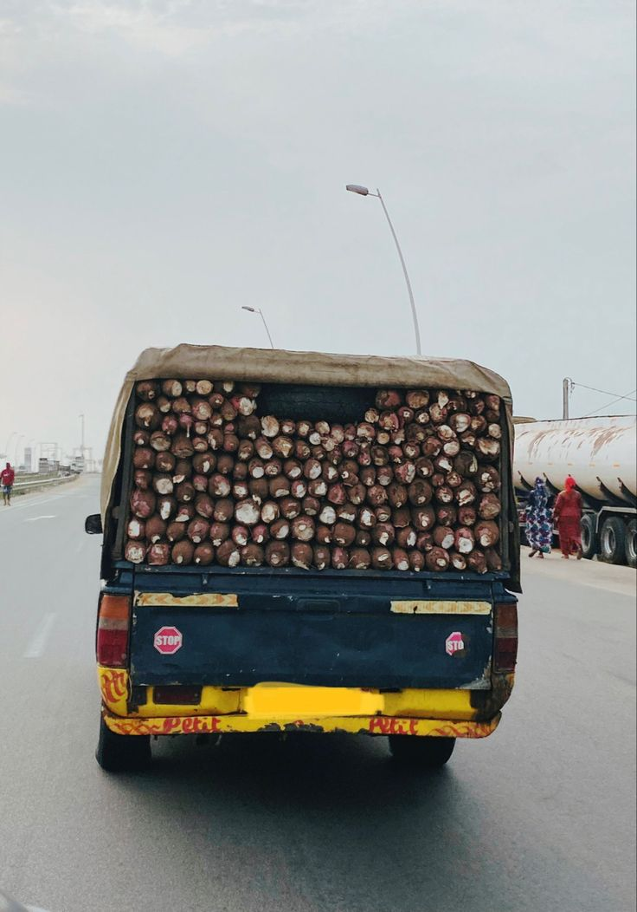
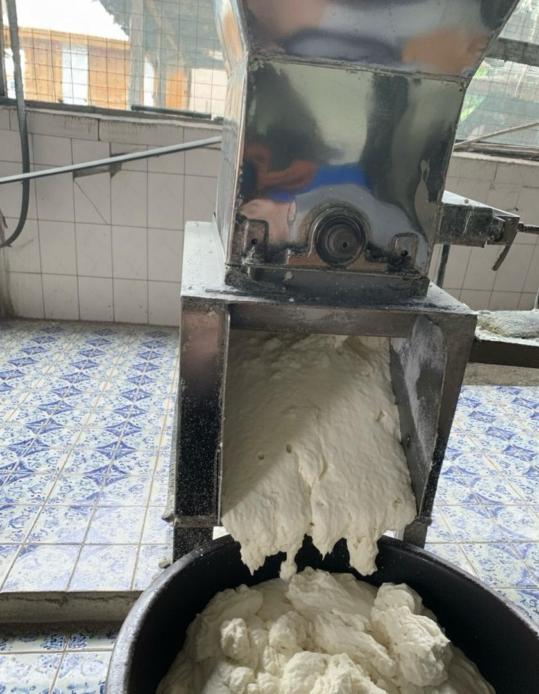
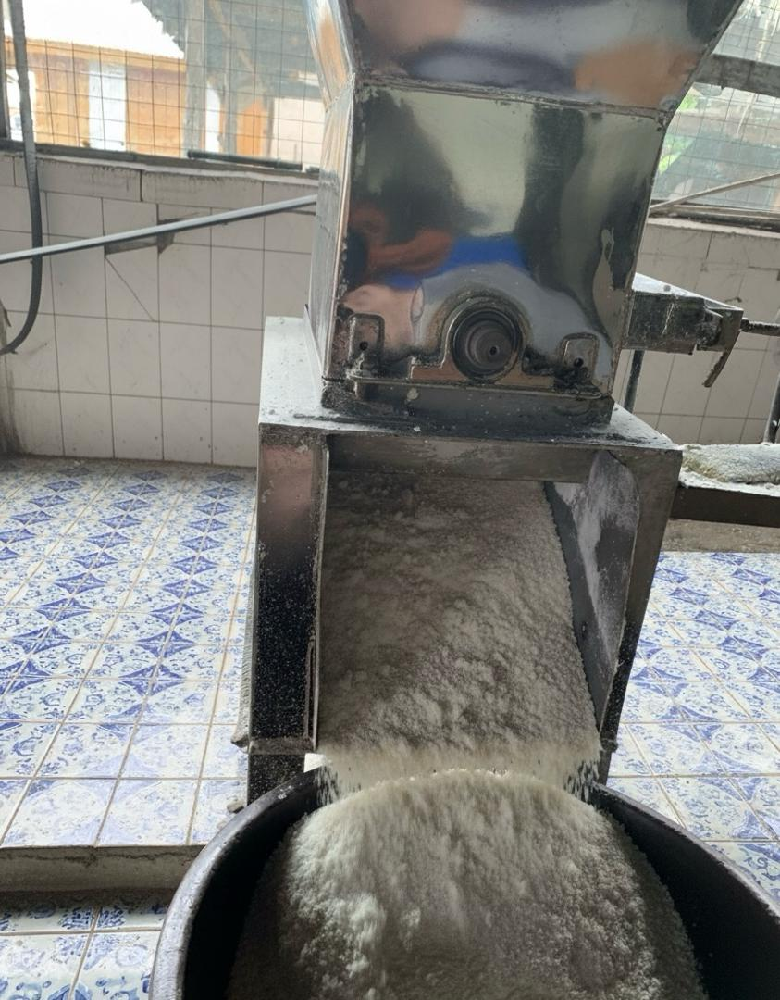
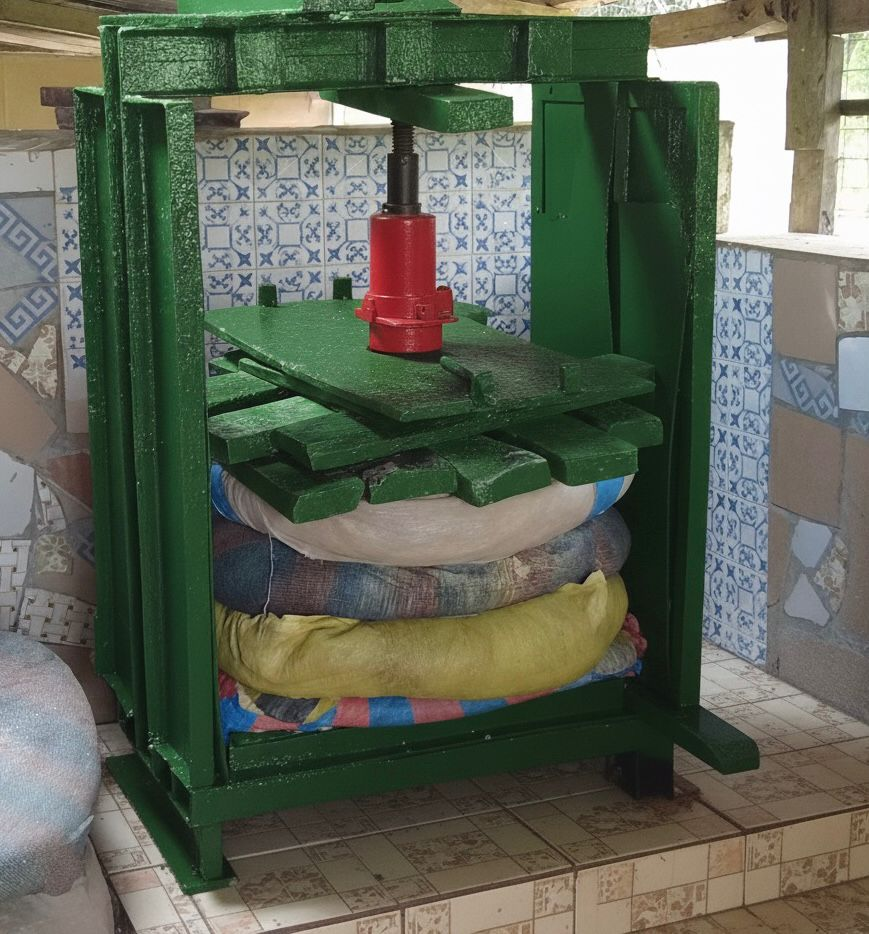
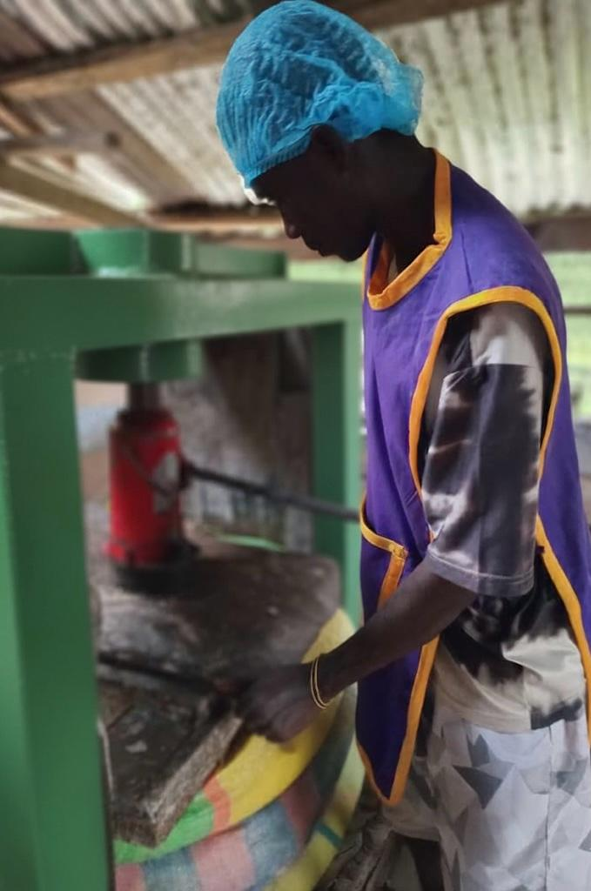
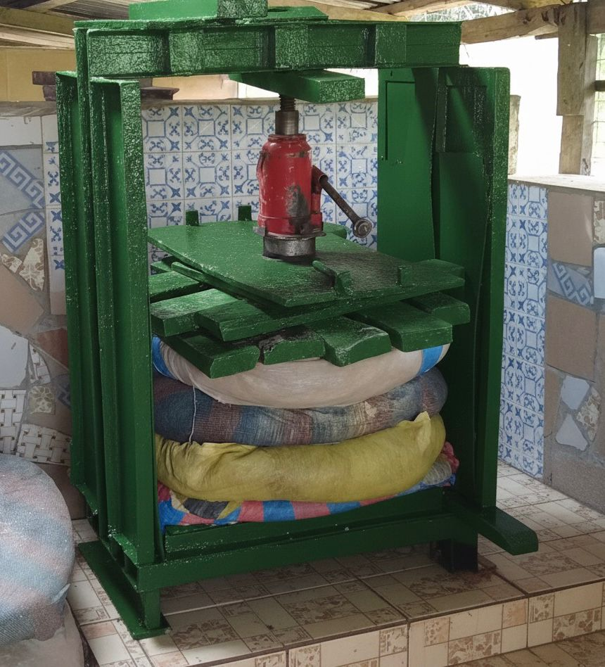

From Cassava Farm to Your Table
Harvesting the Cassava
Raw MaterialWe begin by sourcing fresh, mature cassava roots from trusted local farmers. Our commitment to using only the best raw materials ensures that the cassava we process is free from rot, dirt, or chemical residue. We support local farmers through fair, long-term partnerships that empower communities and promote sustainable agriculture.
- Only fully matured cassava tubers are selected
- Sourced from trusted local Ghanaian farmers
- Free from chemicals, rot, and impurities
- Fair-trade partnerships that support rural communities



Peeling and Washing
HygieneOnce the cassava roots arrive at our facility, they are thoroughly peeled and washed using clean water and modern washing systems. This step removes all sand, soil, and impurities to guarantee a hygienic foundation for the rest of the process. Cleanliness at this stage sets the tone for a superior final product.


Grating
ProcessingThe clean cassava is mechanically grated into a smooth, uniform pulp. Grating breaks down the cassava and prepares it for fermentation. Our machines are designed to achieve the perfect consistency while minimising waste and preserving the natural nutrients.


Fermentation
Flavour DevelopmentThe grated cassava is packed into fermentation sacks and left to ferment for 3–5 hours. This natural fermentation process enhances the flavor, aroma, and texture of the Gari, giving it that authentic Ghanaian taste everyone loves. We monitor the process closely to ensure proper timing and temperature for the best results.
- Fermentation duration: 3–5 hours, carefully monitored
- Develops the authentic Ghanaian Gari aroma and flavour
- Temperature-controlled environment for consistency

Pressing
Moisture RemovalAfter fermentation, the cassava mash is pressed to remove excess water using hydraulic or manual pressing machines. This step reduces moisture content and ensures the Gari is dry enough for roasting. The pressing process is handled with care to maintain the right balance between dryness and softness.


Sieving
Grain RefinementThe pressed cassava cake is then sieved to remove lumps and fibrous materials. Sieving gives the Gari its fine and consistent grain, ensuring smoothness and easy, uniform roasting in the next stage.
Roasting
The Magic StepThis is where the magic happens. The sieved cassava is roasted in large, clean pans under steady heat until it turns into crispy, golden Gari. Our skilled roasters use traditional techniques, perfected through experience, to control temperature and timing — giving our Gari its unique aroma, rich taste, and satisfying crunch.

Cooling, Drying & Second Sieving
Texture PerfectionAfter roasting, the Gari is allowed to cool naturally in a clean, dry environment. This prevents moisture buildup and preserves the crisp texture — we never rush this process. The cooled Gari then goes through a second sieving to ensure superior smoothness and purity, separating finer particles for that perfect BEA TEE texture.
- Uniform grain size for better quality and appearance
- Improved texture — light, smooth, and easy to soak
- Cleaner look and longer shelf life guaranteed
- Consistency in every pack, from the first spoon to the last

Packaging
Sealed FreshnessOnce cooled, the Gari is carefully weighed, sealed, and packaged in food-grade bags that protect it from air and moisture. Our packaging is designed to preserve freshness, extend shelf life, and make the product attractive to customers. Available in multiple sizes to suit every need.
- Available in 1kg, 5kg, 10kg, and 25kg sizes
- Airtight, food-grade packaging materials
- Suitable for homes, shops, and bulk distributors
- Export-ready branding and custom labelling available

Quality Inspection
Final ApprovalBefore any product leaves our factory, it goes through a rigorous final quality inspection. We check for taste, texture, moisture content, and packaging integrity. Only Gari that meets our strict standards earns the BEA TEE AGRO PROCESSING label — your assurance of pure quality and joy.
- Taste and aroma tested by experienced quality staff
- Texture and moisture levels verified per batch
- Packaging integrity checked before dispatch
- Only approved batches carry the BEA TEE label